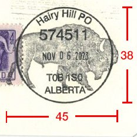

Hairy Hill PO pictorial cancel
Buffalo · 2nd version
- Status
- Active
- Run dates
- ? to present
- Design
- buffalo
- Ink colour
- Black
- Designer
- Unknown
- Post office
- Hairy Hill PO
4 Main Street
Hairy Hill, AB
T0B 1S0 - Subjects
- animal, mammal, bison, buffalo, wildlife
Collect it by mail. Send your stamped covers, with a stamped return envelope, to the post office address above. How to collect pictorial cancels by mail · en français
 Hairy Hill PO1st version
Hairy Hill PO1st version Vegreville PO2023 version
Vegreville PO2023 version Vegreville PO2015 version
Vegreville PO2015 version Vilna POWorld's largest mushrooms / Plus grands champignons au monde
Vilna POWorld's largest mushrooms / Plus grands champignons au monde Chipman PO1st version
Chipman PO1st version